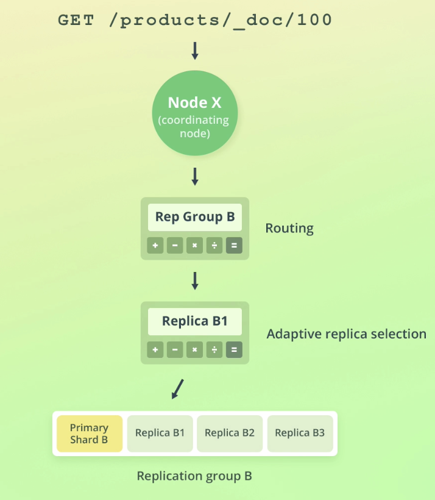
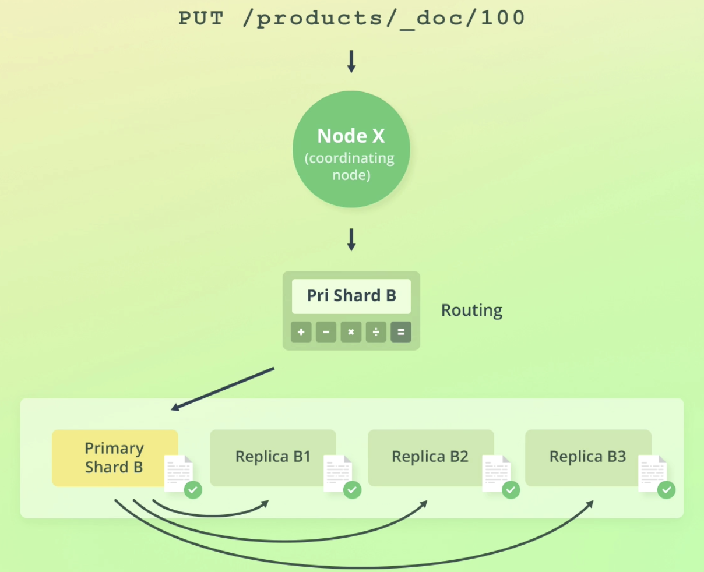
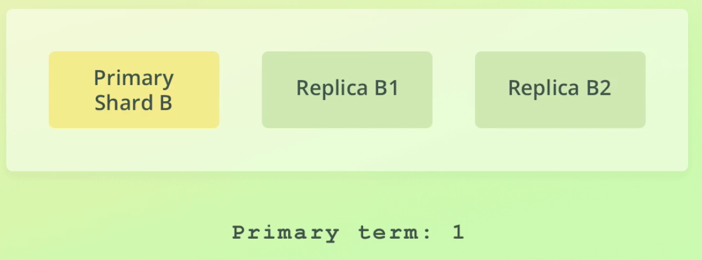
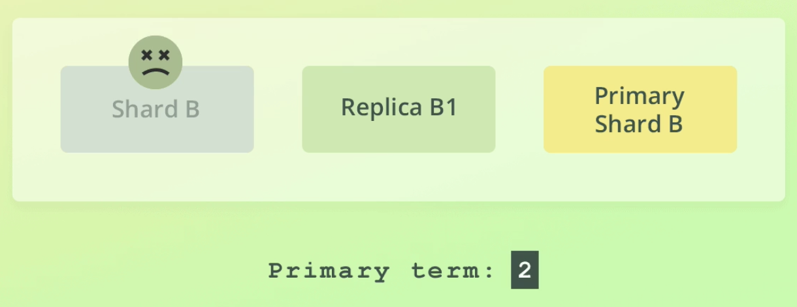
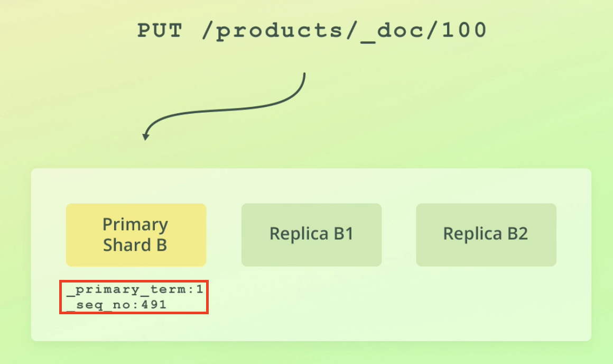
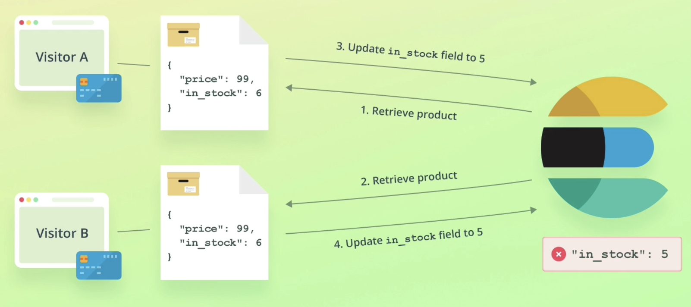
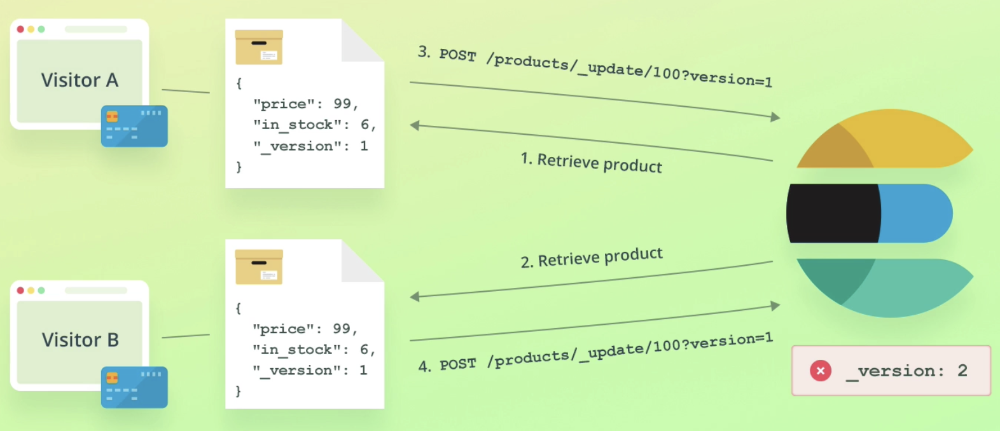
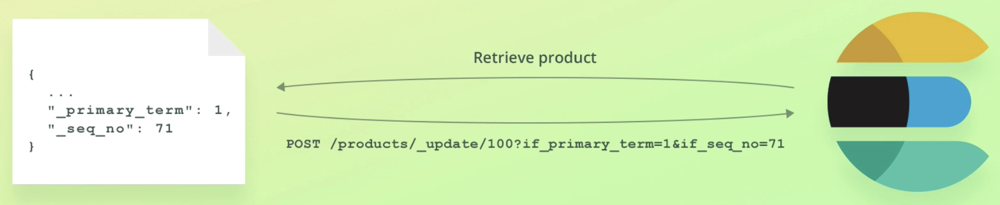

前言
這篇文章是出自於線上課程 Complete Guide to Elasticsearch 的所記錄的筆記。
這一篇文章主要說明如何在 ElasticSearch 操作 documents。
本文
本文的操作都會在 elastic.io 上的 Dev tools 進行操作，每個 gmail 帳戶在 elastic.io 都可以享有 14 天的免費試用。
Index
建立
PUT /<index_name>
1 | PUT /products |
200 - success
1 | { |
如果相同的 index 已經存在，則會得到 400 error
1 | { |
新增
POST /<index_name>/_doc
1 | POST /products/_doc |
200 - success
1 | { |
可以特別注意到 _shards 的部分，total 以及 successful 分別代表的是分片(shard)的預期總數以及成功建立數。而 _id 是 elastic 的唯一值，如果在建立資料時沒有提供，系統會自動生成一個字串。指定 _id 的方式如下
1 | PUT /products/_doc/100 |
1 | { |
如果今天新增 document 但 index 不存在時，index 會自動被建立出來，因為參數 action.auto_create_index 所致，這個是用來決定是否自動建立 index，預設為 true。
建立
GET /<index_name>/_doc/<_id>
1 | GET /products/_docs/100 |
200 - success
1 | { |
可以看到資料被放在 _source 裡。如果資料沒有找到，則 key found 為 false。
更新
POST /<index_name>/_update/<_id>
1 | POST /products/_update/100 |
200 - success
1 | { |
這時再去取得這個 document 時，便可以看到對應的欄位已經成功被修改。
GET /products/_doc/100
1 | { |
ES 的 document 其實是 immutable，update 實際上背後所做的事情是 “replace”!!
也就是先取得特定的 doc，再將資料修改，最後再重新 Reindex。
實際上我們也能透過上面所述較煩瑣的過程達成更新資料的目的，但差異就是從一個請求變成多個請求，導致增加了不必要的 latency。
Scripted update
透過 script 的方式來更新 document 的值
1 | POST /products/_update/100 |
也能透過定義參數的方式來定義 script
1 | POST /products/_update/100 |
Upsert
是一個條件式的 Update，當 upsert 一個不存在的 document 時，script 不會被執行。
1 | POST /products/_update/101 |
可以看到得到的結果是 created
1 | { |
若是再新增一次，因為這個 document 已經存在，得到的回覆也不同
1 | { |
Replace
取代整個 doc
先來看一下 _id=100 的內容
1 | { |
接著來取代這個 docPUT /<index>/_docs/<_id>
1 | PUT /products/_doc/100 |
再取得一次同樣的內容，就可以看到內容已經成功被取代了。
1 | { |
Delete
刪除特定的 doc
DELETE /<index>/doc/<_id>
1 | DELETE /products/doc/100 |
200 - success
1 | { |
這時若再去取得這個 doc，會發現 found 變成了 false。
1 | { |
Routing
ES 透過 routing 的方式，達到儲存、尋找 document 的方式。
ES 透過下列公式計算出要將 document 存放在哪個 shard
Read data
ES 透過 Adaptive Replica Selection (ARS) 的方式，盡可能地找到最佳的 shard。
Write data
ES 都先對 primary shard 修改資料，在修改資料之前會先驗證資料的正確性。
ES 的 primary shard 有可能因為機器掛掉導致由其他 replica shard 代替。


透過 primary term 及 seq_no 來分析哪些操作需要進行。

不過當 index 的內容很大時，分析操作需要花費大量的時間，因此有了 global checkpoint 及 local checkpoint。
- 本質上是一個 seq_no
- 每個 replication group 都有一個 global checkpoint - 如果內部的 shard seq_no 都比較小，代表這些 shard 都已經被修改完畢
- 每個 replica shard 都有一個 local checkpoint - 如果seq_no 比 local checkpoint 還大，代表這些 shard 尚未被修改。
Versioning
- 用來判斷一個 doc 被修改了幾次
- 在舊版的 ES 被用來當作樂觀鎖，但現在有更好的做法 - primary term & seq_no
Optimistic concurrency control
當同時有多個修改同一份資料的請求發生時會有問題

舊版是將 _version 當作參數，雖然能夠解決上面所述的問題，但發生錯誤時會有缺點。

因此，後來便改成了使用 _primary_term & _seq_no。

取得一筆 ES 的資料，可以看見裡面有 _primary_term & _seq_no 的欄位。
1 | { |
當發出修改時必須提供正確的參數數值，否則會得到 409 version conflict error。
正確範例
1
2
3
4
5
6POST /products/_update/101/?if_primary_term=1&if_seq_no=24
{
"doc": {
"in_stock": 6
}
}修改成功
1
2
3
4
5
6
7
8
9
10
11
12
13
14{
"_index" : "products",
"_type" : "_doc",
"_id" : "101",
"_version" : 3,
"result" : "updated",
"_shards" : {
"total" : 2,
"successful" : 2,
"failed" : 0
},
"_seq_no" : 27,
"_primary_term" : 1
}錯誤範例
1
2
3
4
5
6POST /products/_update/101/?if_primary_term=1&if_seq_no=23
{
"doc": {
"in_stock": 6
}
}修改失敗 409 error
1
2
3
4
5
6
7
8
9
10
11
12
13
14
15
16
17
18
19{
"error" : {
"root_cause" : [
{
"type" : "version_conflict_engine_exception",
"reason" : "[101]: version conflict, required seqNo [23], primary term [1]. current document has seqNo [24] and primary term [1]",
"index_uuid" : "gmy9m-f0TG-PXyJYISzDiw",
"shard" : "0",
"index" : "products"
}
],
"type" : "version_conflict_engine_exception",
"reason" : "[101]: version conflict, required seqNo [23], primary term [1]. current document has seqNo [24] and primary term [1]",
"index_uuid" : "gmy9m-f0TG-PXyJYISzDiw",
"shard" : "0",
"index" : "products"
},
"status" : 409
}
Update multi docs
基於 query 來更新多個 docs，與 RDBMS 的 UPDATE WHERE 類似，然後在 ES 要做到相同效果會使用到
- Primary terms
- Sequence numbers
- Optimistic concurrency control
1 | POST /products/_update_by_query |
可以看見有 2 個 doc 被更改了
1 | { |
update_by_query 的背後會先做 snapshot，透過 snapshot 的 primary term & seq no. 來檢查變動是否發生，如果變動已經產生了，則會發生 version_conflict，若是要避開這個問題，可以提供參數
conflict: proceed繞過。
Delete by query
基於 query 來刪除多個 docs
POST /products/_delete_by_query {...}
1 | POST /products/_delete_by_query |
成功刪除了個項目
1 | { |
Bulk API
透過多個動作來對資源進行操作，同時也支援 optimistic concurrency control
需要注意的地方
- 雖然能使用 Content-Type: application/json，但 Content-Type: application/x-ndjson 會更好
- 每一段敘述結尾需使用 換行符號
- 每個動作都是獨立的，一個動作的失敗並不會影響到其他動作的進行
使用時機
- 同時寫入或是修改大量資料
E.g.
1 | POST /_bulk |
index & create 的差異在於，前者如果 index 不存在會自動建立，否則 index 會重新建立; 後者如果資料存在的話，重複建立會發生錯誤。
如果操作的 index 相同，可以將 _index 寫在 url
1 | POST /products/_bulk |